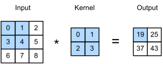
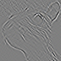
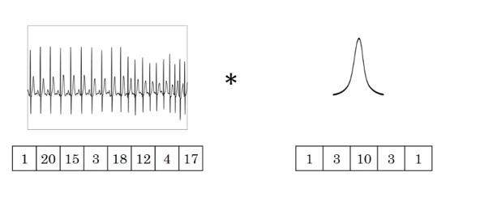
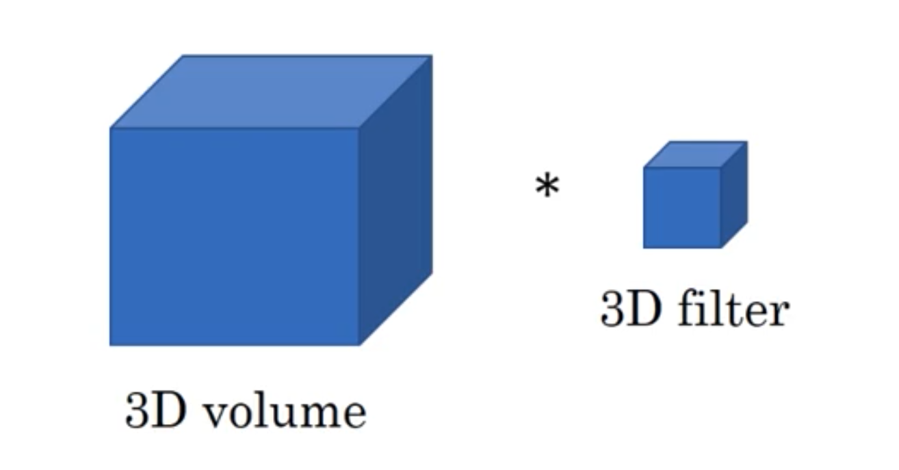

图像卷积#
https://www.bilibili.com/video/BV1VV411478E
二维卷积层#
互相关运算#
严格来说，卷积层是个错误的叫法，因为它所表达的运算其实是互相关运算（cross-correlation），而不是卷积运算。 根据在卷积层中，输入张量和核张量通过互相关运算产生输出张量。
首先，我们暂时忽略通道（第三维）这一情况，看看如何处理二维图像数据和隐藏表示。在下图中，输入是高度为\(3\)、宽度为\(3\)的二维张量（即形状为\(3 \times 3\)）。卷积核的高度和宽度都是\(2\)，而卷积核窗口（或卷积窗口）的形状由内核的高度和宽度决定（即\(2 \times 2\)）。
在二维互相关运算中，卷积窗口从输入张量的左上角开始，从左到右、从上到下滑动。 当卷积窗口滑动到新一个位置时，包含在该窗口中的部分张量与卷积核张量进行按元素相乘，得到的张量再求和得到一个单一的标量值，由此我们得出了这一位置的输出张量值。 在如上例子中，输出张量的四个元素由二维互相关运算得到，这个输出高度为\(2\)、宽度为\(2\)，如下所示：
可以通过下面动图来比较详细的理解它（https://github.com/vdumoulin/conv_arithmetic?tab=readme-ov-file）

注意，输出大小略小于输入大小。这是因为卷积核的宽度和高度大于1， 而卷积核只与图像中每个大小完全适合的位置进行互相关运算。 所以，输出大小等于输入大小\(n_h \times n_w\)减去卷积核大小\(k_h \times k_w\)，即：
这是因为我们需要足够的空间在图像上“移动”卷积核。稍后，我们将看到如何通过在图像边界周围填充零来保证有足够的空间移动卷积核，从而保持输出大小不变。
公式总结#
所以上面相关运算就可以总结为下面内容
输入\(\mathbf{X}: n_{h} \times n_{w}\)
核\(\mathbf{W}: k_{h} \times k_{w}\)
偏差\(b \in \mathbb{R}\)
输出\(\mathbf{Y}:\left(n_{h}-k_{h}+1\right) \times\left(n_{w}-k_{w}+1\right)\)
所以就可以等到相关公式，其中\(\mathbf{W}\)和\(b\)是可学习的参数：
是可学习的参数
卷积核的作用#
在图像和计算机视觉领域，卷积其实已经有几十年的发展历史。在传统的计算机视觉和模式识别中，卷积又被称为滤波器（Filter）。对一张图片，进行卷积操作，可以得到很多种神奇的效果。下面内容来自维基百科，第一个是卷积核是一个单位矩阵，使用单位矩阵对原图进行卷积操作，得到的输出与原图一样；接下来的几个卷积核可以检测到物体边缘，或者进行锐化和模糊。
Operation |
核函数 |
图片结果 |
|---|---|---|
恒等运算（原图不变） |
\({\displaystyle {\begin{bmatrix}\ \ 0&\ \ 0&\ \ 0\\\ \ 0&\ \ 1&\ \ 0\\\ \ 0&\ \ 0&\ \ 0\end{bmatrix}}}\) |
|
脊检测 |
\({\displaystyle {\begin{bmatrix}0&-1&0\\-1&\ \ 4&-1\\0&-1&0\end{bmatrix}}}\) |
 |
边缘检测 |
\({\displaystyle {\begin{bmatrix}-1&-1&-1\\-1&\ \ 8&-1\\-1&-1&-1\end{bmatrix}}}\) |
|
锐化 |
\({\displaystyle {\begin{bmatrix}\ \ 0&-1&\ \ 0\\-1&\ \ 5&-1\\\ \ 0&-1&\ \ 0\end{bmatrix}}}\) |
|
框模糊 |
\({\displaystyle {\frac {1}{9}}{\begin{bmatrix}\ \ 1&\ \ 1&\ \ 1\\\ \ 1&\ \ 1&\ \ 1\\\ \ 1&\ \ 1&\ \ 1\end{bmatrix}}}\) |
|
高斯模糊 3 × 3 |
\({\displaystyle {\frac {1}{16}}{\begin{bmatrix}\ \ 1&\ \ 2&\ \ 1\\\ \ 2&\ \ 4&\ \ 2\\\ \ 1&\ \ 2&\ \ 1\end{bmatrix}}}\) |
|
高斯模糊 5 × 5 |
\({\displaystyle {\frac {1}{256}}{\begin{bmatrix}1&4&6&4&1\\4&16&24&16&4\\6&24&36&24&6\\4&16&24&16&4\\1&4&6&4&1\end{bmatrix}}}\) |
|
模糊遮蔽 5 × 5 |
\({\displaystyle {\frac {-1}{256}}{\begin{bmatrix}1&4&\ \ 6&4&1\\4&16&\ \ 24&16&4\\6&24&-476&24&6\\4&16&\ \ 24&16&4\\1&4&\ \ 6&4&1\end{bmatrix}}}\) |


图像卷积代码实现#
想互关运算#
接下来，我们在corr2d函数中实现如上过程，该函数接受输入张量X和卷积核张量K，并返回输出张量Y。
import torch
from torch import nn
from d2l import torch as d2l
def corr2d(X, K): #X是输入，K是核矩阵
"""计算二维互相关运算"""
h, w = K.shape #获取输入的行数和列数
Y = torch.zeros((X.shape[0] - h + 1, X.shape[1] - w + 1)) #对应上面的公式
for i in range(Y.shape[0]):
for j in range(Y.shape[1]):
Y[i, j] = (X[i:i + h, j:j + w] * K).sum()
return Y
通过输入张量X和卷积核张量K，我们来验证上述二维互相关运算的输出。
X = torch.tensor([[0.0, 1.0, 2.0], [3.0, 4.0, 5.0], [6.0, 7.0, 8.0]])
K = torch.tensor([[0.0, 1.0], [2.0, 3.0]])
corr2d(X, K)
tensor([[19., 25.],
[37., 43.]])
卷积层#
卷积层对输入和卷积核权重进行互相关运算，并在添加标量偏置之后产生输出。 所以，卷积层中的两个被训练的参数是卷积核权重和标量偏置。 就像我们之前随机初始化全连接层一样，在训练基于卷积层的模型时，我们也随机初始化卷积核权重。
基于上面定义的corr2d函数实现二维卷积层。在__init__构造函数中，将weight和bias声明为两个模型参数。前向传播函数调用corr2d函数并添加偏置。
class Conv2D(nn.Module):
def __init__(self, kernel_size):
super().__init__()
self.weight = nn.Parameter(torch.rand(kernel_size)) #设置随机的核，kernel_size为超参数比如说3x3的大小
self.bias = nn.Parameter(torch.zeros(1)) #设置偏差，初始化为0
def forward(self, x):
return corr2d(x, self.weight) + self.bias
高度和宽度分别为\(h\)和\(w\)的卷积核可以被称为\(h \times w\)卷积或\(h \times w\)卷积核。 我们也将带有\(h \times w\)卷积核的卷积层称为\(h \times w\)卷积层。
图像中目标的边缘检测（简单应用）#
通过找到像素变化的位置，来检测图像中不同颜色的边缘。
首先，我们构造一个\(6\times 8\)像素的黑白图像。中间四列为黑色（\(0\)），其余像素为白色（\(1\)）。
X = torch.ones((6, 8))
X[:, 2:6] = 0
X
tensor([[1., 1., 0., 0., 0., 0., 1., 1.],
[1., 1., 0., 0., 0., 0., 1., 1.],
[1., 1., 0., 0., 0., 0., 1., 1.],
[1., 1., 0., 0., 0., 0., 1., 1.],
[1., 1., 0., 0., 0., 0., 1., 1.],
[1., 1., 0., 0., 0., 0., 1., 1.]])
接下来，我们构造一个高度为\(1\)、宽度为\(2\)的卷积核K。当进行互相关运算时，如果水平相邻的两元素相同，则输出为零，否则输出为非零。
K = torch.tensor([[1.0, -1.0]])
现在，我们对参数X（输入）和K（卷积核）执行互相关运算。
如下所示，输出Y中的1代表从白色到黑色的边缘，-1代表从黑色到白色的边缘，其他情况的输出为\(0\)。
Y = corr2d(X, K)
Y
tensor([[ 0., 1., 0., 0., 0., -1., 0.],
[ 0., 1., 0., 0., 0., -1., 0.],
[ 0., 1., 0., 0., 0., -1., 0.],
[ 0., 1., 0., 0., 0., -1., 0.],
[ 0., 1., 0., 0., 0., -1., 0.],
[ 0., 1., 0., 0., 0., -1., 0.]])
现在我们将输入的二维图像转置，再进行如上的互相关运算。
其输出如下，之前检测到的垂直边缘消失了。
不出所料，这个卷积核K只可以检测垂直边缘，无法检测水平边缘。
corr2d(X.t(), K)
tensor([[0., 0., 0., 0., 0.],
[0., 0., 0., 0., 0.],
[0., 0., 0., 0., 0.],
[0., 0., 0., 0., 0.],
[0., 0., 0., 0., 0.],
[0., 0., 0., 0., 0.],
[0., 0., 0., 0., 0.],
[0., 0., 0., 0., 0.]])
如果需要进行检测只需要把卷积核转置一下即可
corr2d(X.t(), K.t())
tensor([[ 0., 0., 0., 0., 0., 0.],
[ 1., 1., 1., 1., 1., 1.],
[ 0., 0., 0., 0., 0., 0.],
[ 0., 0., 0., 0., 0., 0.],
[ 0., 0., 0., 0., 0., 0.],
[-1., -1., -1., -1., -1., -1.],
[ 0., 0., 0., 0., 0., 0.]])
学习卷积核#
如果我们只需寻找黑白边缘，那么以上[1, -1]的边缘检测器足以。然而，当有了更复杂数值的卷积核，或者连续的卷积层时，我们不可能手动设计滤波器。那么我们是否可以学习由X生成Y的卷积核呢？
现在让我们看看是否可以通过仅查看“输入-输出”对来学习由X生成Y的卷积核。
我们先构造一个卷积层，并将其卷积核初始化为随机张量。接下来，在每次迭代中，我们比较Y与卷积层输出的平方误差，然后计算梯度来更新卷积核。为了简单起见，我们在此使用内置的二维卷积层，并忽略偏置。
# 构造一个二维卷积层，它具有1个输出通道、1个输入通道和形状为（1，2）的卷积核
conv2d = nn.Conv2d(1,1, kernel_size=(1, 2), bias=False)
# 这个二维卷积层使用四维输入和输出格式（批量大小、通道、高度、宽度），
# 其中批量大小和通道数都为1
X = X.reshape((1, 1, 6, 8)) #加两个维度
print(X)
Y = Y.reshape((1, 1, 6, 7))
print(Y)
lr = 3e-2 # 学习率
for i in range(10):
Y_hat = conv2d(X)
l = (Y_hat - Y) ** 2 #使用均方误差
conv2d.zero_grad() #把梯度设置为0
l.sum().backward() #计算梯度
# 迭代卷积核
conv2d.weight.data[:] -= lr * conv2d.weight.grad #裸写梯度下降
if (i + 1) % 2 == 0:
print(f'epoch {i+1}, loss {l.sum():.3f}')
tensor([[[[1., 1., 0., 0., 0., 0., 1., 1.],
[1., 1., 0., 0., 0., 0., 1., 1.],
[1., 1., 0., 0., 0., 0., 1., 1.],
[1., 1., 0., 0., 0., 0., 1., 1.],
[1., 1., 0., 0., 0., 0., 1., 1.],
[1., 1., 0., 0., 0., 0., 1., 1.]]]])
tensor([[[[ 0., 1., 0., 0., 0., -1., 0.],
[ 0., 1., 0., 0., 0., -1., 0.],
[ 0., 1., 0., 0., 0., -1., 0.],
[ 0., 1., 0., 0., 0., -1., 0.],
[ 0., 1., 0., 0., 0., -1., 0.],
[ 0., 1., 0., 0., 0., -1., 0.]]]])
epoch 2, loss 11.493
epoch 4, loss 3.490
epoch 6, loss 1.225
epoch 8, loss 0.468
epoch 10, loss 0.186
在\(10\)次迭代之后，误差已经降到足够低。现在我们来看看我们所学的卷积核的权重张量。
conv2d.weight.data.reshape((1, 2))
tensor([[ 0.9443, -1.0324]])
一维卷积、二维卷积、三维卷积#
一维卷积#
图中的输入的数据维度为8，过滤器的维度为5。与二维卷积类似，卷积后输出的数据维度为\(8−5+1=4\)。
如果过滤器数量仍为1，输入数据的channel数量变为16，即输入数据维度为\(8×16\)。这里channel的概念相当于自然语言处理中的embedding，而该输入数据代表8个单词，其中每个单词的词向量维度大小为16。在这种情况下，过滤器的维度由55变为\(5×16\)，最终输出的数据维度仍为4。
如果过滤器数量为\(n\)，那么输出的数据维度就变为\(4×n\)。
一于维卷积常用：文本、语言、时序序列
二维卷积#
可以参考上面相关内容
二维卷积常用于：计算机视觉、图像处理领域
三维卷积#
这里采用代数的方式对三维卷积进行介绍，具体思想与一维卷积、二维卷积相同。
假设输入数据的大小为\(a_1×a_2×a_3\)，channel数为\(c\)，过滤器大小为\(f\)，即过滤器维度为\(f×f×f×c\)（一般不写channel的维度），过滤器数量为\(n\)。
基于上述情况，三维卷积最终的输出为\((a_1−f+1)×(a_2−f+1)×(a_3−f+1)×n\)。该公式对于一维卷积、二维卷积仍然有效，只有去掉不相干的输入数据维度就行。
三维卷：积常用于医学领CT影响），视频处理领域（检测动作及人行为），气象地图。